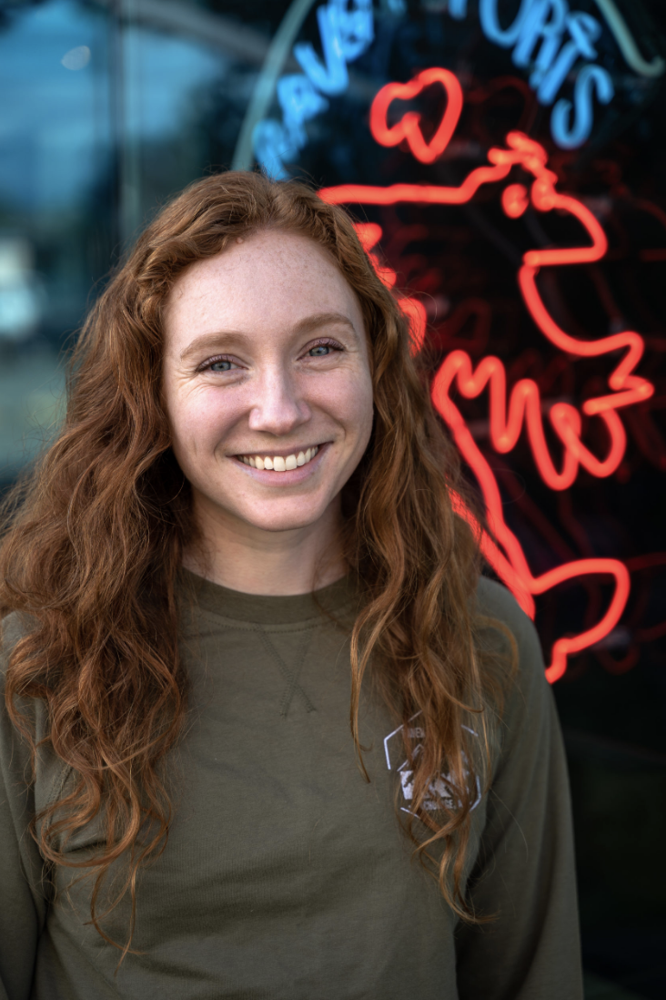

I graduated from the University of Delaware in 2017 with bachelor degrees in Environmental Science and Chemistry before moving to Alaska. In Anchorage I started working for Resource Data Inc., a software and GIS company where I currently work as a Senior GIS Analyst. In my day-to-day, I mainly work with ESRI products to perform spatial analysis, digitization, database maintenance, cartography services, and web map and application development. I created this site to experiment with cartographic methods, make fun creative projects, and expand my experience with open-source mapping.
After spending almost 8 years in Alaska I moved back to the lower 48 to be closer to friends and family and am currently based in western Washington state. In my free time I can often be found running, hiking, or skiing in the mountains, sewing, and traveling.